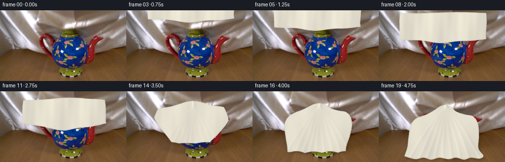
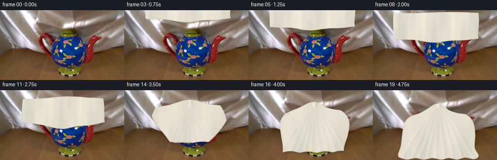
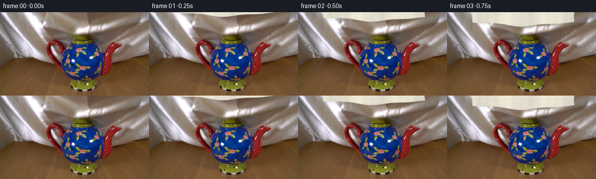

CODING AGENTS AS PIXEL WORLD MODELS
traex/GPT-5.6-Sol · 0158
点击播放 · 原生 RGB 像素
逐轮保存的候选
回放视频、检查图与代码变化。
每份候选均可单独播放。实际图片检查记录在下方工具轨迹中。
候选 01播放与检查图
点击播放 · 原生 RGB 像素

展开代码变化
--- 上一保存版本
+++ 本次保存版本
@@ -0,0 +1,184 @@
+from pathlib import Path
+import numpy as np
+import cv2
+from PIL import Image
+from scipy.ndimage import distance_transform_edt, gaussian_filter
+import artifact_io
+
+CASE_DIR = Path(__file__).resolve().parent
+W, H = 256, 144
+S = 4
+HH, WW = H*S, W*S
+
+
+def smoothstep(x):
+ x = np.clip(x, 0.0, 1.0)
+ return x*x*(3.0-2.0*x)
+
+
+def poly_mask(points):
+ m = np.zeros((HH, WW), np.uint8)
+ pts = np.round(np.asarray(points, np.float32)*S).astype(np.int32)
+ cv2.fillPoly(m, [pts], 255, lineType=cv2.LINE_8)
+ return m > 0
+
+
+def sample_curve(control, n_each=13):
+ """Catmull-Rom interpolation through a short chain of 2-D controls."""
+ p = np.asarray(control, np.float32)
+ if len(p) < 3:
+ return p
+ ext = np.vstack([p[0], p, p[-1]])
+ out = []
+ for i in range(1, len(ext)-2):
+ p0,p1,p2,p3 = ext[i-1],ext[i],ext[i+1],ext[i+2]
+ for u in np.linspace(0,1,n_each,endpoint=False):
+ u2,u3=u*u,u*u*u
+ out.append(.5*((2*p1)+(-p0+p2)*u+(2*p0-5*p1+4*p2-p3)*u2+(-p0+3*p1-3*p2+p3)*u3))
+ out.append(p[-1])
+ return np.asarray(out)
+
+
+def target_mask(extra_bottom=0.0):
+ # The final outline follows the lid, the round pot, its handle and spout,
+ # before pooling in loose silk folds on the tabletop.
+ controls = [
+ (52,132+extra_bottom*.4),(58,113),(61,88),(65,68),(76,55),
+ (97,47),(113,38),(125,30),(137,28),(148,33),(157,41),
+ (174,47),(191,51),(201,66),(203,91),(202,116),
+ (212,131+extra_bottom*.3),(204,137+extra_bottom),(187,135+extra_bottom*.8),
+ (173,139+extra_bottom),(157,135+extra_bottom*.6),(141,138+extra_bottom),
+ (123,135+extra_bottom*.5),(106,139+extra_bottom),(91,135+extra_bottom*.6),
+ (75,138+extra_bottom),(61,135+extra_bottom*.7)
+ ]
+ return poly_mask(sample_curve(controls, 10))
+
+
+def panel_mask(p):
+ # A broad scarf is lowered from just above the locked camera frame.
+ r = np.clip(p/.47, 0, 1)
+ lower = -8 + 75*r
+ top = lower - (49 + 6*r)
+ sway = 2.0*np.sin(np.pi*r)
+ left, right = 42+sway, 217+sway
+ pts=[]
+ # top hem (very slight wave)
+ for x in np.linspace(left,right,44):
+ y=top + 1.2*np.sin((x-left)/(right-left)*2*np.pi+0.5)
+ pts.append((x,y))
+ # right side
+ pts += [(right+1, top+18),(right-1, lower-8)]
+ # lower silk edge, right to left; center sags naturally
+ for x in np.linspace(right,left,64):
+ u=(x-left)/(right-left)
+ sag=6.5*np.sin(np.pi*u)**2
+ ripple=1.1*np.sin(u*5*np.pi + 0.6)
+ pts.append((x, lower+sag+ripple))
+ pts += [(left-1, top+17)]
+ return poly_mask(pts)
+
+
+def cloth_mask(p):
+ a = panel_mask(min(p,.47))
+ if p <= .47:
+ return a
+ q = smoothstep((p-.47)/.53)
+ # A tiny downward overshoot gives the last second a visible, soft settling.
+ overshoot = 2.3*np.sin(np.pi*q)*(q**2)
+ b = target_mask(overshoot)
+ # Signed-distance morph keeps one coherent sheet rather than crossfading it.
+ sa = distance_transform_edt(a)-distance_transform_edt(~a)
+ sb = distance_transform_edt(b)-distance_transform_edt(~b)
+ return ((1-q)*sa + q*sb) >= 0
+
+
+def downsample(a, mode=Image.Resampling.LANCZOS):
+ if a.ndim == 2:
+ im=Image.fromarray(np.clip(a,0,255).astype(np.uint8), 'L')
+ else:
+ im=Image.fromarray(np.clip(a,0,255).astype(np.uint8), 'RGB')
+ return np.asarray(im.resize((W,H), mode), dtype=np.float32)
+
+
+def render_cloth(base, mask, p):
+ yy,xx=np.mgrid[0:HH,0:WW].astype(np.float32)
+ x,y=xx/S,yy/S
+ q=smoothstep((p-.47)/.53) if p>.47 else 0.0
+
+ # Pearl/ivory silk. Broad waves and narrow highlight-dark pairs create
+ # specular folds without relying on any external texture or model.
+ val = np.full((HH,WW), 0.0, np.float32)
+ panel_folds = (7.0*np.sin((x-14)/11.5 + .018*y) +
+ 2.7*np.sin(x/4.9 - y/31.0) +
+ 1.8*np.sin(x/2.35 + y/43.0))
+ val += (1-q)*panel_folds
+
+ apex_x, apex_y = 135.0, 31.0
+ v=np.clip((y-apex_y)/108.0,0,1)
+ endpoints=[58,78,96,113,128,145,164,184,207]
+ radial=np.zeros_like(val)
+ for j,end in enumerate(endpoints):
+ bend=(1.7*np.sin(0.055*y+j*1.37))*v
+ line=apex_x+(end-apex_x)*(v**0.84)+bend
+ d=x-line
+ amp=(0.30+0.70*v)
+ radial += amp*(10.0*np.exp(-(d/2.35)**2)-7.0*np.exp(-((d-4.1)/3.2)**2))
+ # Soft larger undulations between major folds.
+ radial += 4.2*np.sin(x/14.0 + y/34.0) + 2.0*np.sin(x/6.8-y/27.0)
+ val += q*radial
+
+ # Top-left lighting, edge roll-off and a fine stable woven shimmer.
+ val += 7.0*(1-y/H) - 2.7*np.abs(x-133)/128
+ val += 1.15*np.sin(x*2.85+y*.19) + .65*np.sin(y*3.25-x*.11)
+ rng=np.random.default_rng(158)
+ grain=gaussian_filter(rng.normal(0,1,(HH,WW)).astype(np.float32), .42)
+ val += grain*0.9
+
+ base_color=np.zeros((HH,WW,3),np.float32)
+ base_color[...,0]=224+val*1.02
+ base_color[...,1]=219+val*.98
+ base_color[...,2]=203+val*.82
+
+ # Slightly darker rolled hem, strongest along the pooled lower boundary.
+ din=distance_transform_edt(mask)/S
+ hem=(din<1.15)&mask
+ lower_hem=hem & (y>52)
+ base_color[hem]-=np.array([8,8,7],np.float32)
+ base_color[lower_hem]-=np.array([4,4,3],np.float32)
+
+ alpha_hi=(mask.astype(np.uint8)*255)
+ alpha=downsample(alpha_hi)/255.0
+ cloth=downsample(base_color)
+
+ # Soft contact/cast shadow offset underneath the opaque material.
+ sh=gaussian_filter(mask.astype(np.float32), 3.1*S)
+ shifted=np.zeros_like(sh)
+ dy=int((1.6+2.0*q)*S)
+ dx=int((.5+1.2*q)*S)
+ shifted[dy:,dx:]=sh[:-dy,:-dx]
+ outside=np.clip(shifted-mask.astype(np.float32),0,1)
+ shadow=downsample(outside*255)/255.0
+ shadow_strength=(0.10+0.11*q)*shadow
+ under=base.astype(np.float32)*(1-shadow_strength[...,None])
+ # A faint warm bounce in the table contact shadow.
+ under[...,2] *= (1-0.035*q*shadow)
+
+ out=under*(1-alpha[...,None])+cloth*alpha[...,None]
+ return np.clip(out,0,255).astype(np.uint8)
+
+
+def main():
+ first=np.asarray(Image.open(CASE_DIR/'first_frame.png').convert('RGB'),dtype=np.uint8)
+ assert first.shape==(H,W,3)
+ frames=[first.copy()]
+ for i in range(1,20):
+ p=i/19.0
+ m=cloth_mask(p)
+ frames.append(render_cloth(first,m,p))
+ frames=np.stack(frames).astype(np.uint8)
+ # Contract-critical exact first frame.
+ frames[0]=first
+ artifact_io.save(frames, CASE_DIR)
+
+if __name__=='__main__':
+ main()
候选 02播放与检查图
点击播放 · 原生 RGB 像素


展开代码变化
--- 上一保存版本
+++ 本次保存版本
@@ -45,11 +45,11 @@
controls = [
(52,132+extra_bottom*.4),(58,113),(61,88),(65,68),(76,55),
(97,47),(113,38),(125,30),(137,28),(148,33),(157,41),
- (174,47),(191,51),(201,66),(203,91),(202,116),
- (212,131+extra_bottom*.3),(204,137+extra_bottom),(187,135+extra_bottom*.8),
- (173,139+extra_bottom),(157,135+extra_bottom*.6),(141,138+extra_bottom),
- (123,135+extra_bottom*.5),(106,139+extra_bottom),(91,135+extra_bottom*.6),
- (75,138+extra_bottom),(61,135+extra_bottom*.7)
+ (174,47),(194,51),(207,66),(211,91),(210,118),
+ (218,135+extra_bottom*.3),(209,142+extra_bottom),(190,139+extra_bottom*.8),
+ (174,143+extra_bottom),(157,140+extra_bottom*.6),(141,143+extra_bottom),
+ (123,140+extra_bottom*.5),(105,143+extra_bottom),(88,140+extra_bottom*.6),
+ (70,143+extra_bottom),(53,138+extra_bottom*.7)
]
return poly_mask(sample_curve(controls, 10))
可观测工具轨迹
实际执行的命令与返回图片。
命令 1exit 0
/bin/bash -lc "cat prompt.txt && printf '\\n---RULES---\\n' && cat GENERATION_RULES.md"
命令 2exit 1
/bin/bash -lc "find . -maxdepth 2 -type f -printf '%p\\n' | sort && printf '\\nTOOLS\\n' && which ffmpeg && which python3 && python3 - <<'PY'
try:
import cv2; print('cv2',cv2.__version__)
except Exception as e: print('no cv2',e)
try:
from PIL import Image; print('PIL ok')
except Exception as e: print('no PIL',e)
PY"命令 3exit 0
/bin/bash -lc 'cat artifact_io.py'
命令 4exit 0
/bin/bash -lc "python3 - <<'PY' mods=['PIL','cv2','numpy','imageio','scipy'] for m in mods: try: x=__import__(m); print(m,'OK',getattr(x,'__version__','')) except Exception as e: print(m,'ERR',e) PY command -v ffmpeg || true"
命令 5exit 0
/bin/bash -lc "cat > generate.py <<'PY'
from pathlib import Path
import numpy as np
import cv2
from PIL import Image
from scipy.ndimage import distance_transform_edt, gaussian_filter
import artifact_io
CASE_DIR = Path(__file__).resolve().parent
W, H = 256, 144
S = 4
HH, WW = H*S, W*S
def smoothstep(x):
x = np.clip(x, 0.0, 1.0)
return x*x*(3.0-2.0*x)
def poly_mask(points):
m = np.zeros((HH, WW), np.uint8)
pts = np.round(np.asarray(points, np.float32)*S).astype(np.int32)
cv2.fillPoly(m, [pts], 255, lineType=cv2.LINE_8)
return m > 0
def sample_curve(control, n_each=13):
\"\"\"Catmull-Rom interpolation through a short chain of 2-D controls.\"\"\"
p = np.asarray(control, np.float32)
if len(p) < 3:
return p
ext = np.vstack([p[0], p, p[-1]])
out = []
for i in range(1, len(ext)-2):
p0,p1,p2,p3 = ext[i-1],ext[i],ext[i+1],ext[i+2]
for u in np.linspace(0,1,n_each,endpoint=False):
u2,u3=u*u,u*u*u
out.append(.5*((2*p1)+(-p0+p2)*u+(2*p0-5*p1+4*p2-p3)*u2+(-p0+3*p1-3*p2+p3)*u3))
out.append(p[-1])
return np.asarray(out)
def target_mask(extra_bottom=0.0):
# The final outline follows the lid, the round pot, its handle and spout,
# before pooling in loose silk folds on the tabletop.
controls = [
(52,132+extra_bottom*.4),(58,113),(61,88),(65,68),(76,55),
(97,47),(113,38),(125,30),(137,28),(148,33),(157,41),
(174,47),(191,51),(201,66),(203,91),(202,116),
(212,131+extra_bottom*.3),(204,137+extra_bottom),(187,135+extra_bottom*.8),
(173,139+extra_bottom),(157,135+extra_bottom*.6),(141,138+extra_bottom),
(123,135+extra_bottom*.5),(106,139+extra_bottom),(91,135+extra_bottom*.6),
(75,138+extra_bottom),(61,135+extra_bottom*.7)
]
return poly_mask(sample_curve(controls, 10))
def panel_mask(p):
# A broad scarf is lowered from just above the locked camera frame.
r = np.clip(p/.47, 0, 1)
lower = -8 + 75*r
top = lower - (49 + 6*r)
sway = 2.0*np.sin(np.pi*r)
left, right = 42+sway, 217+sway
pts=[]
# top hem (very slight wave)
for x in np.linspace(left,right,44):
y=top + 1.2*np.sin((x-left)/(right-left)*2*np.pi+0.5)
pts.append((x,y))
# right side
pts += [(right+1, top+18),(right-1, lower-8)]
# lower silk edge, right to left; center sags naturally
for x in np.linspace(right,left,64):
u=(x-left)/(right-left)
sag=6.5*np.sin(np.pi*u)**2
ripple=1.1*np.sin(u*5*np.pi + 0.6)
pts.append((x, lower+sag+ripple))
pts += [(left-1, top+17)]
return poly_mask(pts)
def cloth_mask(p):
a = panel_mask(min(p,.47))
if p <= .47:
return a
q = smoothstep((p-.47)/.53)
# A tiny downward overshoot gives the last second a visible, soft settling.
overshoot = 2.3*np.sin(np.pi*q)*(q**2)
b = target_mask(overshoot)
# Signed-distance morph keeps one coherent sheet rather than crossfading it.
sa = distance_transform_edt(a)-distance_transform_edt(~a)
sb = distance_transform_edt(b)-distance_transform_edt(~b)
return ((1-q)*sa + q*sb) >= 0
def downsample(a, mode=Image.Resampling.LANCZOS):
if a.ndim == 2:
im=Image.fromarray(np.clip(a,0,255).astype(np.uint8), 'L')
else:
im=Image.fromarray(np.clip(a,0,255).astype(np.uint8), 'RGB')
return np.asarray(im.resize((W,H), mode), dtype=np.float32)
def render_cloth(base, mask, p):
yy,xx=np.mgrid[0:HH,0:WW].astype(np.float32)
x,y=xx/S,yy/S
q=smoothstep((p-.47)/.53) if p>.47 else 0.0
# Pearl/ivory silk. Broad waves and narrow highlight-dark pairs create
# specular folds without relying on any external texture or model.
val = np.full((HH,WW), 0.0, np.float32)
panel_folds = (7.0*np.sin((x-14)/11.5 + .018*y) +
2.7*np.sin(x/4.9 - y/31.0) +
1.8*np.sin(x/2.35 + y/43.0))
val += (1-q)*panel_folds
apex_x, apex_y = 135.0, 31.0
v=np.clip((y-apex_y)/108.0,0,1)
endpoints=[58,78,96,113,128,145,164,184,207]
radial=np.zeros_like(val)
for j,end in enumerate(endpoints):
bend=(1.7*np.sin(0.055*y+j*1.37))*v
line=apex_x+(end-apex_x)*(v**0.84)+bend
d=x-line
amp=(0.30+0.70*v)
radial += amp*(10.0*np.exp(-(d/2.35)**2)-7.0*np.exp(-((d-4.1)/3.2)**2))
# Soft larger undulations between major folds.
radial += 4.2*np.sin(x/14.0 + y/34.0) + 2.0*np.sin(x/6.8-y/27.0)
val += q*radial
# Top-left lighting, edge roll-off and a fine stable woven shimmer.
val += 7.0*(1-y/H) - 2.7*np.abs(x-133)/128
val += 1.15*np.sin(x*2.85+y*.19) + .65*np.sin(y*3.25-x*.11)
rng=np.random.default_rng(158)
grain=gaussian_filter(rng.normal(0,1,(HH,WW)).astype(np.float32), .42)
val += grain*0.9
base_color=np.zeros((HH,WW,3),np.float32)
base_color[...,0]=224+val*1.02
base_color[...,1]=219+val*.98
base_color[...,2]=203+val*.82
# Slightly darker rolled hem, strongest along the pooled lower boundary.
din=distance_transform_edt(mask)/S
hem=(din<1.15)&mask
lower_hem=hem & (y>52)
base_color[hem]-=np.array([8,8,7],np.float32)
base_color[lower_hem]-=np.array([4,4,3],np.float32)
alpha_hi=(mask.astype(np.uint8)*255)
alpha=downsample(alpha_hi)/255.0
cloth=downsample(base_color)
# Soft contact/cast shadow offset underneath the opaque material.
sh=gaussian_filter(mask.astype(np.float32), 3.1*S)
shifted=np.zeros_like(sh)
dy=int((1.6+2.0*q)*S)
dx=int((.5+1.2*q)*S)
shifted[dy:,dx:]=sh[:-dy,:-dx]
outside=np.clip(shifted-mask.astype(np.float32),0,1)
shadow=downsample(outside*255)/255.0
shadow_strength=(0.10+0.11*q)*shadow
under=base.astype(np.float32)*(1-shadow_strength[...,None])
# A faint warm bounce in the table contact shadow.
under[...,2] *= (1-0.035*q*shadow)
out=under*(1-alpha[...,None])+cloth*alpha[...,None]
return np.clip(out,0,255).astype(np.uint8)
def main():
first=np.asarray(Image.open(CASE_DIR/'first_frame.png').convert('RGB'),dtype=np.uint8)
assert first.shape==(H,W,3)
frames=[first.copy()]
for i in range(1,20):
p=i/19.0
m=cloth_mask(p)
frames.append(render_cloth(first,m,p))
frames=np.stack(frames).astype(np.uint8)
# Contract-critical exact first frame.
frames[0]=first
artifact_io.save(frames, CASE_DIR)
if __name__=='__main__':
main()
PY
python3 generate.py
python3 - <<'PY'
import numpy as np
from PIL import Image
f=np.asarray(Image.open('first_frame.png').convert('RGB'))
a=np.asarray(Image.open('frames/00.png').convert('RGB'))
print('exact',np.array_equal(a,f),'shape',a.shape)
PY"命令 6exit 0
/bin/bash -lc "python3 generate.py >/dev/null && python3 - <<'PY'
from pathlib import Path
import numpy as np
from PIL import Image
z=np.load('pixels.npz')['pixels']
f=np.asarray(Image.open('first_frame.png').convert('RGB'),dtype=np.uint32)
p=(f[:,:,0]<<16)|(f[:,:,1]<<8)|f[:,:,2]
print('pixels',z.shape,z.dtype,'frame0_exact',np.array_equal(z[:,:,0],p))
print('frames',len(list(Path('frames').glob('*.png'))),'inspection',Path('inspection.png').exists(),'index',Path('index.html').stat().st_size)
PY"视觉工具实际返回图片 1

视觉工具实际返回图片 2

保存候选 2 份；完成命令 6 次；可验证图片返回 2 张。原始 API 响应与完整日志保留在本地。